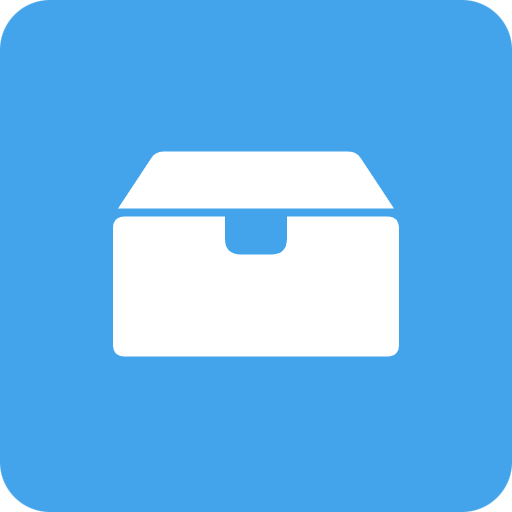

Business · Inventory v0.1.0Available release
Nivix Store
A straightforward inventory management app for small businesses and home users. Organize stock into spaces, categories, and items.
WindowsLinuxApache-2.0
Nivix Technology / Studio
Explore the apps that are available today. Future releases appear here only when they’re ready.
1 project

Business · Inventory v0.1.0Available release
A straightforward inventory management app for small businesses and home users. Organize stock into spaces, categories, and items.
No projects match that search. Try another name or keyword.
Discontinued
The earlier Nivix Studio desktop app is preserved for existing users. It is no longer maintained.
Nivix Technology / Downloads
Download links point to Nivix’s release host. Installers and archives are not stored on this website.
Latest available release
This is the currently released version of Nivix Store. Newer development builds are not public downloads.
Kept for existing users. This archived app is no longer maintained.
Nivix Technology / Developer resources
Official documentation and download pages for technologies used by released Studio projects.
Nivix Technology / Preferences
Choose how this site looks and moves on this device.